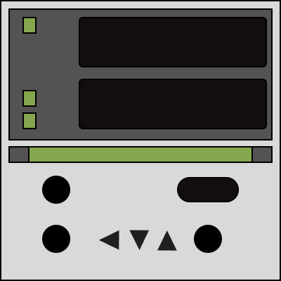
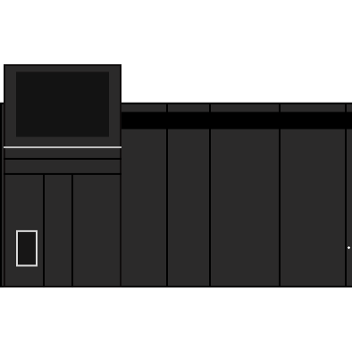

指示調節計 ====> PLC [PID設定変換]
[設定]
azbil : P(比例帯) [ 0.1～999.9% ]
I(積分時間)[ 0～9999s ]
D(微分時間)[ 0.0～999.9s ]
PVの温度帯: 小数点の値の/ 0.1 で入力
※ センサが0-50.0℃ の場合＝500
MVの幅: 0-100 の場合100
入力
----------------------------------------------
出力
KV8000 PID命令 : 比例定数(Kp) [ 1～50000 ]
積分定数(Ti) [ 1～30000 ]
微分定数(Td) [ 0～30000 ]


[ 入力 ]
P:
I:
D:
PV幅:
MV幅:
[ 出力 ]
P:
I:
D: